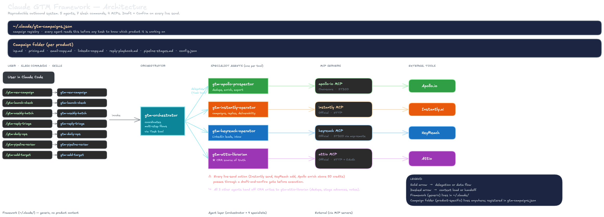

A reproducible outbound system for Claude Code
The Claude GTM Framework is a set of 7 specialist agents, 8 slash commands, and 4 MCP integrations that run an entire cold outbound operation, including email and LinkedIn copy generation, from one operator's Claude Code session. Product specifics live in a per-campaign folder, so the same framework drives any number of products without duplication.
4 tools (Apollo, Instantly, Attio, HeyReach) are wired through MCP servers.
7 agents: one per tool, one orchestrator, plus email and LinkedIn copy writers that generate sequences from your ICP and pricing.
8 slash commands map to the cadence: new campaign (with auto copy generation), launch check, weekly batch, reply triage, daily ops, and more.
Each product campaign is a folder of 7 files (ICP, pricing, copy, pipeline, config). Framework itself stays generic.
Draft-and-confirm on every live send. No silent sends, no unexpected bulk updates, no runaway Apollo credits.
The problem this framework solves
Outbound operations usually fracture across tools, with human glue holding everything together. The framework replaces that glue with agents and skills that share a single source of truth per campaign.
Every tool is an island
- Apollo lists live in CSVs on disk
- Instantly has its own reply inbox and campaign copy
- HeyReach has its own inbox, separate from email
- Attio is partially updated when you remember
- A second product means rebuilding everything by hand
- Apollo credits burn because nothing dedupes before enrichment
One operator, one motion, many products
- Apollo search runs free, enrichment only hits what Attio does not already have
- Instantly and HeyReach campaigns are created from a master template and loaded by the orchestrator
- Every reply on any channel lands in Attio with the right stage advance
- A new product is a new campaign folder registered in one line
- The coworker installs the same system in under 30 minutes
Architecture at a glance
The diagram below is the single mental model for the framework. Each row is one tool pipeline. Every agent reads the active campaign's config before doing any work. All CRM writes end up in Attio.

Lives in ~/.claude/
Agents, skills, campaign template, and framework docs. Identical on every machine that installs the framework.
Lives anywhere on disk
7 files describing one product: ICP, pricing, email copy, LinkedIn copy, reply playbook, pipeline stages, tool IDs. Registered in the registry so agents can find it.
~/.claude/gtm-campaigns.json
Maps campaign slugs to folder paths. Holds the default campaign. Updated by /gtm-new-campaign when you register a new product.
Four tool specialists, one coordinator, two copy writers
Each tool specialist owns exactly one tool. The orchestrator coordinates multi-step flows by delegating via the Task tool. Two copy-writer agents generate email and LinkedIn sequences from the campaign's ICP and pricing. No agent writes to Attio directly except the Attio librarian; the rest hand off.
Runs Apollo saved searches, dedupes against Attio before spending credits, enriches only the remainder, caches every export. Always searches first (free) and only enriches verified new contacts (1 credit each).
Duplicates the campaign's master Instantly sequence, loads the batch leads, leaves it paused, summarises, waits for your yes before starting. Pulls replies, classifies them with the reply playbook, drafts responses for confirmation.
Adds leads to master LinkedIn campaigns (HeyReach API cannot create campaigns, so a human builds the master once per ICP). Respects LinkedIn's native limits of 100 connection requests per week per account, surfaces account health warnings.
Every reply, every stage advance, every new target gets recorded here. Provides dedupe lookups for Apollo before enrichment. Enforces that stage names exist in the campaign's pipeline definition.
Top-level entry point for any flow that touches more than one tool. Loads the campaign's full config once, passes structured payloads to specialists via the Task tool, aggregates draft-and-confirm gates (per step, never one mega-confirm). Invoked automatically by most slash commands.
Reads the campaign's ICP, pricing, positioning, and reply playbook, then generates the 4-email sequence (Day 0 Reveal, Day 3 Value, Day 7 Proof, Day 12 Breakup) with 3 subject variants per email and spintax-ready body. Draws on Hormozi, Ogilvy, Halbert, Cialdini frameworks plus modern cold-outbound best practice. Writes to email-copy.md only after your confirmation.
Generates the connection note (max 280 chars, character count verified), Day 4 first message, and Day 9 follow-up. Reads the finished email copy first so LinkedIn stays tonally consistent. Respects LinkedIn's professional register (no hard CTAs, no pricing, no emojis) and HeyReach safety rules. Writes to linkedin-copy.md only after your confirmation.
Skills map to the cadence
Skills are the verbs. You type a slash command in Claude Code, the skill loads the campaign, delegates to the right agents, and asks for confirmation on any live-send step.
Guided setup for a new campaign. Copies the blank template, walks you through ICP, pricing, tool IDs, writes the registry entry, then auto-invokes /gtm-write-copy to generate first-draft email and LinkedIn copy from the inputs you just gave. New campaigns land fully seeded, not blank.
Generates or regenerates email and LinkedIn copy for a campaign from its ICP, pricing, and positioning. Auto-invoked by /gtm-new-campaign, or run standalone any time you want to refresh copy. Supports full regen, email-only, linkedin-only, or a single email rewrite. Accept/Revise/Skip per draft.
Verifies every launch-checklist item against live data: MCP connections, Apollo saved search size, Instantly mailbox warmup, HeyReach master campaign, Attio pipeline stages, email and LinkedIn copy completeness. Outputs a pass/fail report.
Runs Apollo pull, dedupe against Attio, enrich, load to Attio, prep Instantly campaign, load HeyReach leads, with a Proceed gate before each live send. Finishes with a summary of credits spent and campaigns started.
Pulls new replies from Instantly and new messages from HeyReach inbox in parallel, classifies each (interested, not now, wrong person, etc.), drafts a response per the reply playbook, asks Send per reply.
The full daily loop in four blocks: morning reply triage, midday LinkedIn accepted-connection check, afternoon Attio hygiene on stuck deals, end-of-day deliverability scan on Instantly mailboxes.
Read-only snapshot: stage counts with 7-day deltas, KPIs compared to floors in the campaign config, stuck deals per stage, one concrete action for the weakest stage.
Add a single target you found manually. Verifies ICP via Apollo, dedupes against Attio, asks before enriching, writes to Attio, optionally queues for the active Instantly and HeyReach campaigns.
Campaigns: how the framework runs N products
The framework is generic. Product specifics live in a folder of seven files per campaign. Switching between products is just switching which campaign the agents load at the start of a task.
| File | Contains |
|---|---|
icp.md |
Primary and secondary ICP, qualification signals, deprioritise criteria, Apollo filter recipe, geographic priority, buying committee. |
pricing.md |
Tier matrix, currency, feature gates, revenue assumptions, positioning statement, main competitors. |
email-copy.md |
4-email sequence (Day 0, 3, 7, 12) with 3 subject-line variants and a body template per email. |
linkedin-copy.md |
Connection note (max 280 chars), Day 4 first message, Day 9 follow-up, HeyReach safety limits reminder. |
reply-playbook.md |
6 classification scenarios (interested, not now, wrong person, send info, who is this for, no reply) with response templates and stage-advance rules. |
pipeline-stages.md |
Stage names, entry and exit criteria, KPI floors per stage, stuck-deal definitions. |
config.json |
Tool IDs (Apollo saved search, Instantly master campaign, HeyReach master campaign, Attio pipeline slug), KPI targets, operational parameters (batch size, send window, trial length). |
The rule: agents know HOW to do the job. Campaign folders tell them WHAT the job is for this product. Change the product and the framework adapts without touching agents.
Draft-and-confirm on every live send
The framework's core safety promise: no agent ever writes a message, starts a campaign, or spends meaningful Apollo credit without first printing a summary and waiting for a literal yes.
These always gate
- Starting or resuming an Instantly or HeyReach campaign
- Bulk adding > 25 leads to a live campaign
- Sending any email reply
- Sending any LinkedIn message
- Apollo enrichment that would spend > 50 credits
- Pausing an already-running campaign
- Bulk delete or bulk stage changes in Attio
These run freely
- Apollo search (free anyway)
- Reading Attio records, pulling stats
- Pulling Instantly or HeyReach inbox snapshots
- Appending notes to existing Attio records
- Single-record stage advances (administrative)
- Deliverability and account-health checks
Orchestrator rule: multi-step flows ask per step, never one super-confirm at the end. You can abort between Apollo and Attio without losing everything downstream.
First run on a new machine
If the framework is already installed on your Claude Code setup, skip to step 3. Otherwise walk all five.
Clone the framework repo and run the setup prompt
The repo is public. Clone anywhere. Then paste the setup prompt into a fresh Claude Code session.
git clone https://github.com/amadejdemsar-create/claude-gtm-framework.git
open -a "Claude Code"In Claude Code, paste the contents of gtm-framework/setup-audit.md. It audits your existing MCPs, asks for keys, copies agents and skills into ~/.claude/, and registers your first campaign.
Verify MCP connections
Restart Claude Code after setup so the 4 MCPs load. In a fresh session, ask Claude:
list my Apollo saved searcheslist my Instantly campaignslist my Attio workspaces(triggers OAuth browser on first connect)list my HeyReach campaigns
If any fail, fix the specific MCP config in ~/.claude.json before continuing.
Register your product as a campaign
Run the guided setup. It copies the blank template, asks for ICP, pricing, copy, and tool IDs, writes everything into the correct files, updates the registry.
/gtm-new-campaignIf you already have a campaign running (Apollo search, HeyReach master, Instantly master, Attio pipeline), tell it you have existing IDs and paste them; it will wire them into the new campaign config without you recreating anything.
Run the launch check
Every launch-checklist item gets verified against live data. If anything is missing, you get a clear list with the exact fix.
/gtm-launch-check <campaign-slug>Do not proceed to step 5 until this reports PASS across the board. Common blockers at this stage: Instantly mailboxes not warmed for 10+ days, HeyReach master campaign not created in the UI, Attio pipeline missing a stage defined in pipeline-stages.md.
Send the first batch
Monday afternoon is the default send day. The framework runs Apollo pull, dedupe, Attio load, Instantly prep, HeyReach prep, and asks for a Proceed gate before each live send.
/gtm-weekly-batch <campaign-slug>The first batch typically runs 20 to 30 minutes end to end. Monitor Instantly deliverability on day 2 and 3. Run /gtm-daily-ops every morning after to clear replies and check LinkedIn.
Transfer to another operator
The framework was built with reproducibility as a first-class goal. The setup prompt detects what the coworker already has, imports it, and only installs what is missing.
Share one link and one instruction
The framework is public. Send the coworker this link:
https://github.com/amadejdemsar-create/claude-gtm-frameworkAnd one instruction: "Clone the repo, open Claude Code, paste the contents of gtm-framework/setup-audit.md into a fresh session."
What the setup prompt does on their machine
- Phase A · Audit: reads their
~/.claude.json, lists existing MCP servers, checks whether any of the 4 GTM-relevant MCPs are already configured - Phase B · Plan: produces a punch list of what needs to be installed vs what is already in place
- Phase C · MCPs: walks through Apollo (community MCP, requires clone + build), Instantly (hosted HTTP), Attio (OAuth, browser auth), HeyReach (mcp-remote wrapper). Prompts for API keys one at a time.
- Phase D · Agents and skills: copies the 5 agent files into
~/.claude/agents/and 7 skill folders into~/.claude/skills/ - Phase E · First campaign: if they already have an outbound campaign running, it imports: captures their Apollo saved search ID, their Instantly master ID, their HeyReach master ID, their Attio pipeline slug. Walks through ICP, pricing, and copy in guided prompts.
- Phase F · Verify: tests every MCP connection, runs
/gtm-launch-checkon the imported campaign, reports anything that still needs attention - Phase G · Handover: prints a "system ready" message with the exact next commands
What the coworker does NOT have to redo
- If they already have warmed Instantly domains, keep them
- If they already have a HeyReach master campaign, keep it
- If they already have an Attio pipeline, keep it
- If they already have an Apollo saved search, keep it
- If they have partial copy (emails drafted but not LinkedIn), the framework flags TODOs rather than overwriting
The framework adapts to their existing setup. It does not force a fresh start.
Keeping both operators in sync
If your coworker adds an improvement (better email copy, a new reply scenario), they can push it back to the framework repo as a PR. Campaign-specific content stays local; framework-level changes get shared.
If you both run the same campaign, share the campaign folder via git or a shared drive. The registry file ~/.claude/gtm-campaigns.json just needs the same path entry on both machines.
Expected setup time for your coworker: 30 minutes end to end if they already have the 4 tool accounts and existing campaigns. 90 minutes if they need to create accounts and warm domains from scratch.
Cost expectations per tool
The framework itself costs nothing. Tool subscriptions are the recurring cost. Apollo is the only tool with a per-use credit model, and the framework's dedupe rule keeps that burn low.
Things that commonly go wrong on first run
If something does not work, 8 out of 10 times it is one of these. The framework includes error messages that point at the right file, but sometimes the root cause is one layer upstream.
Claude Code needs a restart after any change to ~/.claude.json. If you added an MCP and restarted but still see nothing, run jq '.mcpServers | keys' ~/.claude.json and confirm your entry is there.
The weekly batch is running on an Apollo list that was not deduped against Attio. Check the campaign's .cache/apollo/usage_log.jsonl. If the search is wider than intended, tighten the saved-search filters.
The HeyReach operator lets you push limits close to the LinkedIn cap, but aggressive old-account use can still trigger warnings. Run /gtm-daily-ops and immediately pause any flagged account.
The stage name passed by the agent is not in the campaign's pipeline-stages.md. You probably added a stage in Attio without updating the markdown file. Fix the file; the agent will accept the advance on the next attempt.
Mailbox hitting content triggers, bounces, or unsubscribes. End-of-day block of /gtm-daily-ops surfaces this. Throttle the mailbox for 24 to 48 hours and review the last batch of emails for triggering content.
Coworker has not installed Claude Code yet. The setup prompt will say so explicitly. Install from docs.anthropic.com, then re-run.
When in doubt: run /gtm-launch-check <campaign-slug>. It re-verifies every moving part against live data and points at the specific fix.